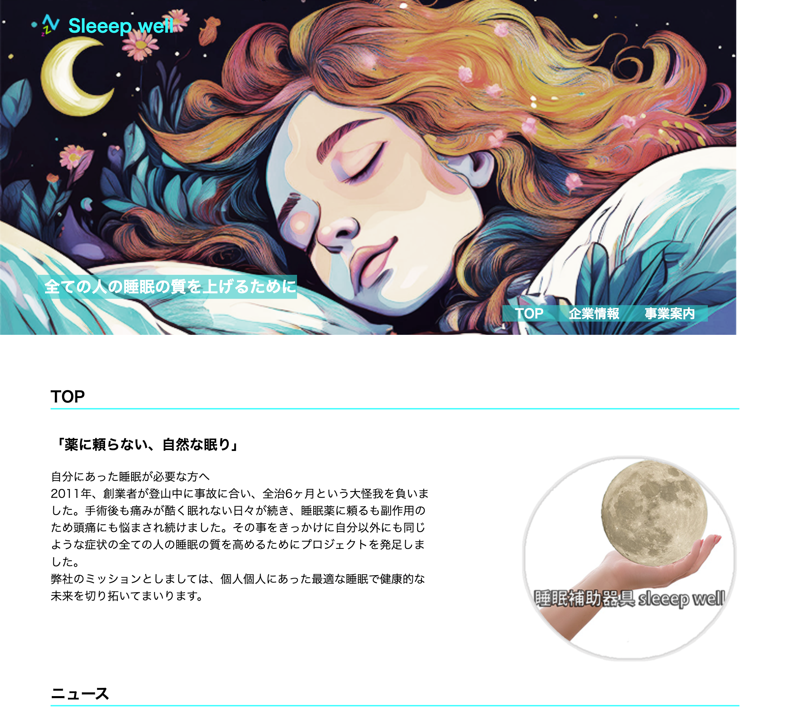

このサイトは、「薬に頼らない自然な眠り」という明確なコンセプトを、清潔感と安心感を両立したデザインと、ユーザーに寄り添う情報設計で表現しています。HTML/CSSの基本技術を活用し、誰でも見やすく、信頼感を持って利用できるサイトとなっています。
URL
担当
デザイン・コーディング
企画（5時間）、デザイン/イラスト制作/写真加工（6時間）、コーディング（10時間）
サイトの目的
サービスの認知と新規クライアントの獲得
ターゲット
不眠で医者にかかっているような人へ
薬に頼らず睡眠をコントロール出来るような手助けするための企業サイト
デザインについて
whiteの背景色にaqua・rebeccapurpleなどのアクセントカラーで清潔感と安心感を演出。
余白やフォントサイズを大きめに設定し、情報の読みやすさと落ち着いた印象を両立。またラインを引くことで情報の境界がどこか分かりやすく設計。ラインカラーは同一色に揃え統一感を出しました。
ナビメニューにはラインやカラー背景を使い、視線誘導を意識。画像やロゴを背景やヘッダーに活用し、ブランドイメージを強調。
コーディングについて
HTMLはセクションごとに明確に分割し、見出し・リスト・テーブル・段落などを分かりやすく意識。CSSはFlexboxを多用し、情報のグルーピングや横並びレイアウトを取り入れました。
メディアクエリによるレスポンシブ対応で、画面幅に応じてレイアウトやフォントサイズを調整。ホバー時の色変化やボーダー装飾など、インタラクションも最低限実装しました。